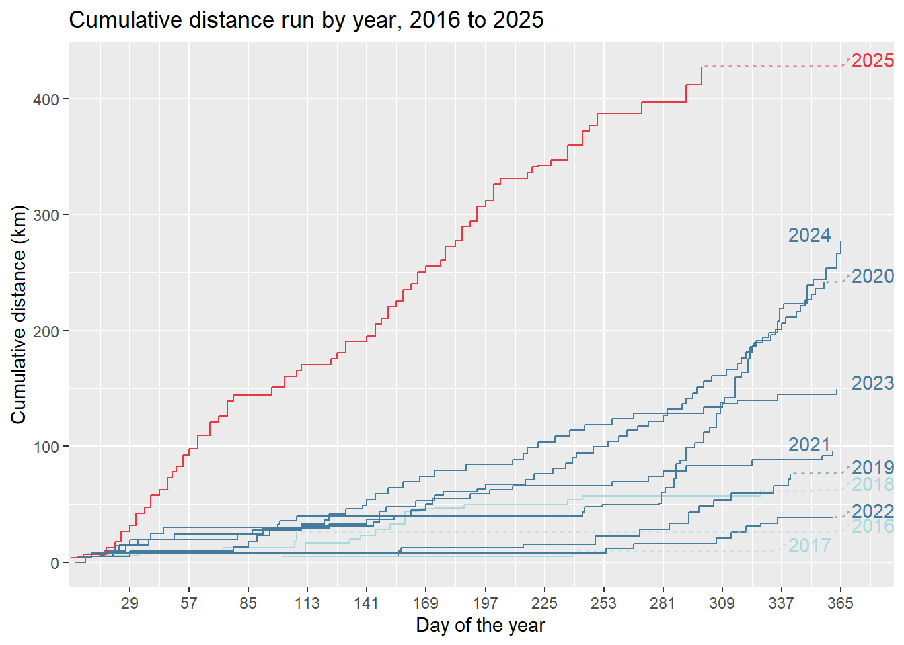
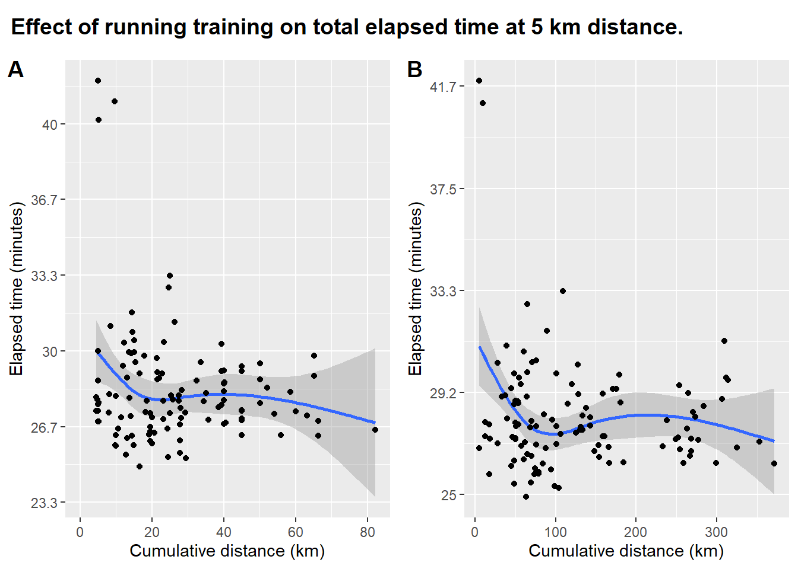
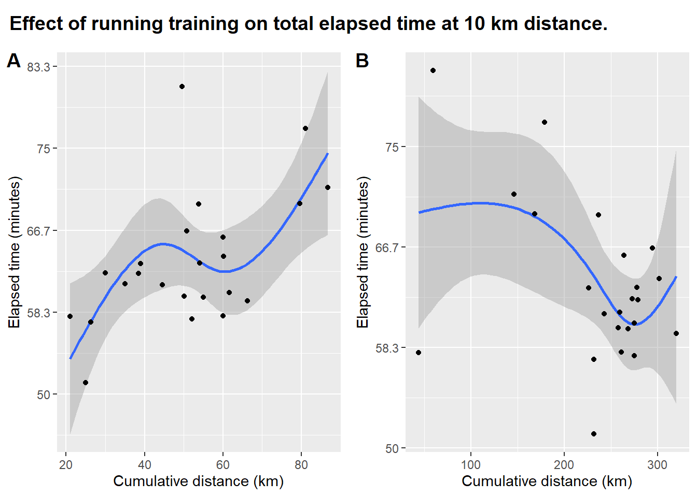
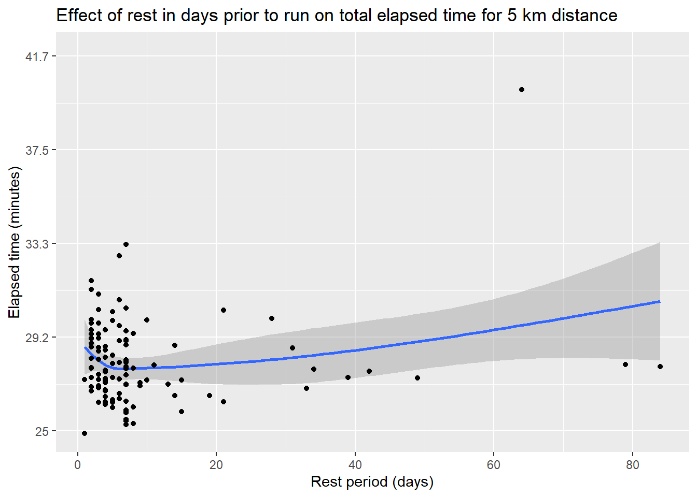
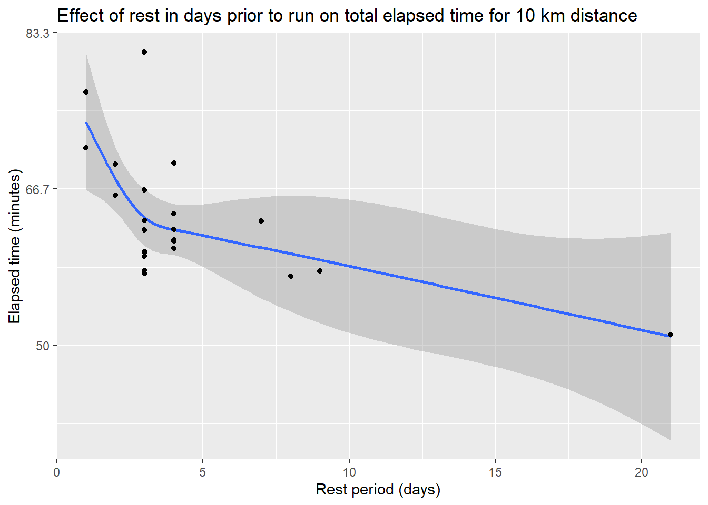
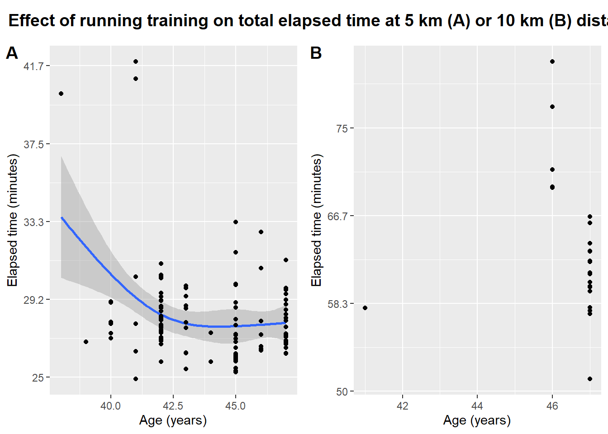

Factors associated with running performance: an n-of-1 analysis
Background
I’ve been a casual runner for some years now, starting with Park Run and most recently a 10 km event through central London. I did my personal best park run some years ago and not really got close to it since. This has made me wonder what factors are associated with getting faster times - am I getting slower as I get older, how much effect does rest before an event make a difference, and so on.
I’ve been gathering my data with a GPS-enabled Garmin smart watch and feeding those results to Strava.
This report uses the rStrava package to pull data from my strava account and presents summaries and some analyses of my running.
Methods
I’ve got a Garmin running watch on which I record all my runs and workouts. This automatically shares data with Strava. I used the rStrava R package to pull my data from Strava for all activity after 01 January 2015. Runs were classified by distance into 3 groups: 5 km (recorded distance of 4.5-5.5 km), 10 km (9.5-11 km) and ‘Other’. Outliers with a moving time of 1200 seconds and a max_speed of 0 were removed. Non-running data were excluded from the analyses.
I’ve assumed that a rest of more than a month would have no effect, and so periods greater than this were set to missing. Also, sometimes I do more than a standard distance in one outing, so I would do 10 km, stop my watch at that point and then run one or two more kilometers further to get home. For these runs the rest period would be zero days and so these have been excluded too.
Data were graphed and cubic splines with three degrees of freedom were used to assess the relationship between a predictor variable and the time taken to complete either a 5 km or 10 km run.
Summary
I’ve managed about 428 km so far this year, and my 10 km personal best is 51.15 minutes on 28-09-2025.
Analysis
Training
The effect of training was assessed by calculating cumulative distances run over the preceding month or 6 months and compared against the time taken to complete a run of a given distance.

For both the one and six-month training period, total elapsed time at the 5 km distance reduced with increasing cumulative distance. Both periods showed a rapid improvement as cumulative distance increased from 0. Similarly, both showed something of a plateau in the middle of the cumulative distance before improving again at the right hand of the distribution.

The effect of cumulative distance on the time taken to run 10 km is very different though. Total elapsed time increased with increasing cumulative distance when assessing the effect of one month of training. In contrast, the average elapsed time for a 10 km run was fastest with 250-270 km of cumulative training over the previous 6 months.
Rest

Performance improved with increasing rest up until about 8 or 9 days prior to the run for the 5 km distance, and the elapsed time for distance slowly increased after that optimal point.

Unlike the 5 km distance, perfomance continued to improve with increasing rest, but may be excessively influenced by an outlying data point at over 20 days of rest.
Age

Sparse data for the 10 km distance precluded the fitting of a cubic spline for that distance. Between 38 and 40 years performance at the 5 km distance improved, flattening out at around the age of 43.
Discussion
These data have thrown up some interesting results. I’m not noticeably getting slower as I get older, at least not in the age range looked at here. This may be somewhat confounded by a long period in, I think, 2023 to 2024 where I was suffering with piriformis syndrome and thus was not doing any running.
I’ve always thought that my optimum rest period was about 14 days prior to a run. At this point I start to get a bit fidgety and need to do some exercise. The effect of training, as measured by cumulative distance, shows a complicated relationship with performance, especially for the 10 km distance, where performance decreased with increased training. I think this might be a result of a lack of data. The relationship between training and performance at the 10 km distance might also be confounded by age, as I’ve only really trained for 10 km distance in the past year. Also, my training may not be particularly effective. It’s consisted of one 10 km run at the weekend and a 5 km run midweek. Three training sessions per week might have been more effective, and it might have helped to do longer runs than the 10 km distance as part of the training.
While it’s been interesting to use my Strava data, there’s a lot that hasn’t been captured. All the relationships above could be confounded by weight, which I haven’t tracked carefully or shared with Strava. I haven’t accounted for things like caffeine consumption on the day of the run, which I have a hunch could be a factor. I also haven’t recorded whether a run was training or part of an event, like Park Run or Vitality 10k. The effect of ‘psych’ for an event could be a substantial factor in performance and it’s not necessarily sensible to compare performance for training which could be deliberately at a lower intensity, with performance for an event in which one is putting in maximal effort.
I haven’t taken into account any effect of non-running training or non-training exercise. It’s an open question about how much effect that might have. Non-running training would obviously be non-specific for running performance but strength training for legs and cardio training could support improved performance.
Finally, I’m missing a lot of data on past Park Runs that I ran before owning a smart watch, and thus weren’t recorded on Strava. These could add a lot of data for the 5 km performance estimates and could provide extra data on the effect of aging on my performance.
Overall, it’s been really interesting to dig into my Strava data with R and take some data-based inferences from it. If I were training for a 10 km event now, I’d try to fit in more sessions and try to do more than 10 km at a slower pace.
Acknowledgements
Villarroel et al for the rStrava package.
Wickham for ggplot2 and dlplyr, Wilke for cowplot, all of which have been used heavily here.